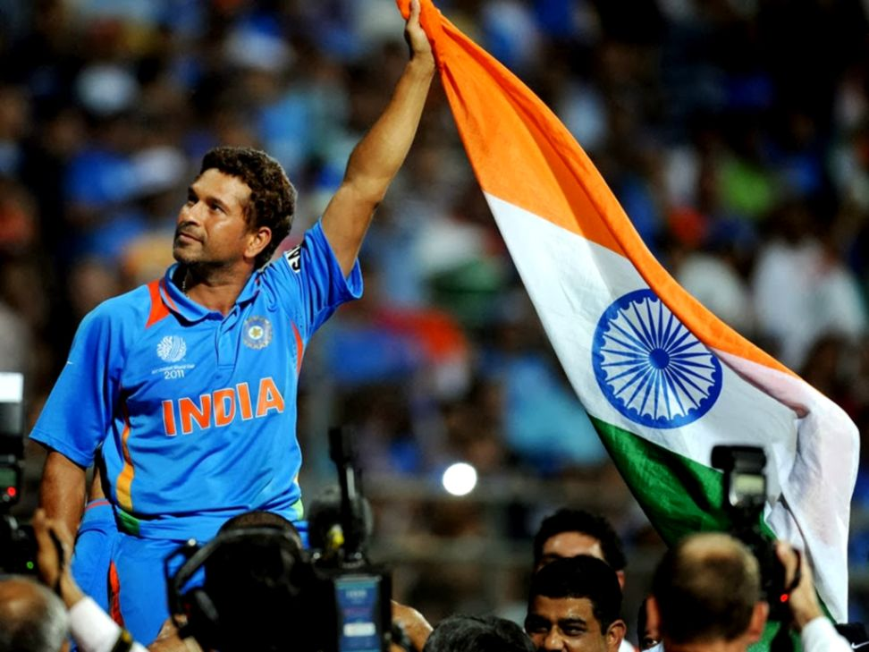

Sachin Ramesh Tendulkar - God of Cricket
The greatest batsman in the history of crikcet

The only cricketer who has 10,000+ runs in all formats of cricket and also known as Master Blaster
The time line of the Sachin Ramesh Tendulkar's Life:
- 1988 - Scores 100 not out in his first first-class match for Bombay against Gujarat in the Ranji Trophy becoming the youngest cricketer to score a century on his first-class debut, aged 15 years and 232 days.
- 1989 - Makes Test debut for India against Pakistan in Karachi at the age of 16.
- 1990 - Scores maiden Test century against England at Old Trafford.
- 1992 - At the age of 19 he becomes the first overseas-born player to represent Yorkshire.
- 1996 - Leading run scorer at World Cup played in India, Pakistan and Sri Lanka with a total of 523 runs.
- 2003 - Named the Player of the Tournament at the 2003 Cricket World Cup and scores 673 runs, the highest by any player in the tournament.
- 2005 - Overtakes Sunil Gavaskar’s record of the highest number of Test centuries by claiming his 35th against Sri Lanka in Delhi.
- 2007 - Becomes the first player to score over 15,000 ODI runs during a match against South Africa in Belfast.
- 2012 - Becomes the first player to score over 15,000 ODI runs during a match against South Africa in Belfast.
- 2013 - Announces he will retire from Test cricket after playing in his 200th Test against the West Indies in November.
"Tendulkar is to Cricket what Michael Jordan is to Basketball and Muhammad Ali is to Boxing"
- Brian Lara